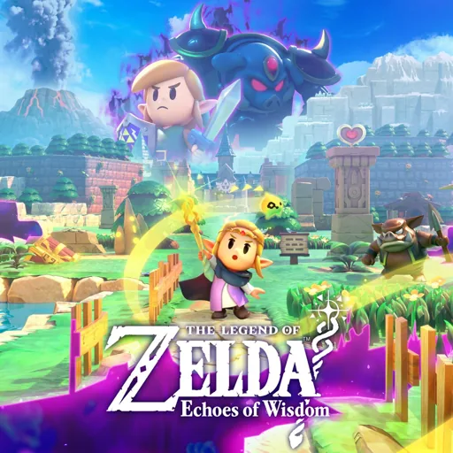
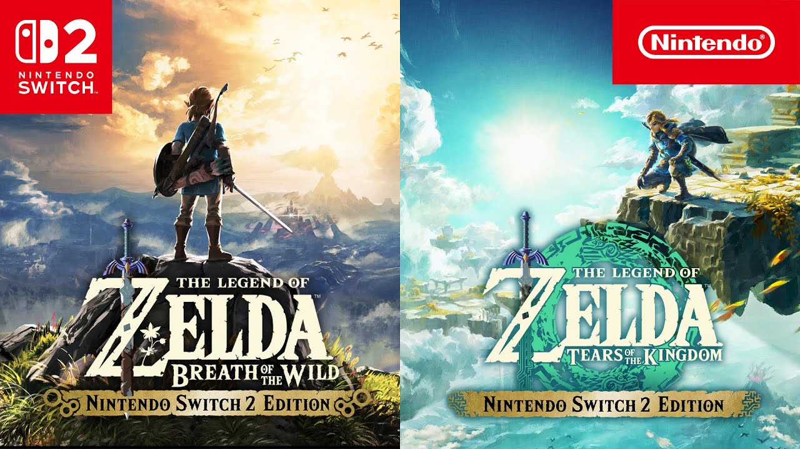
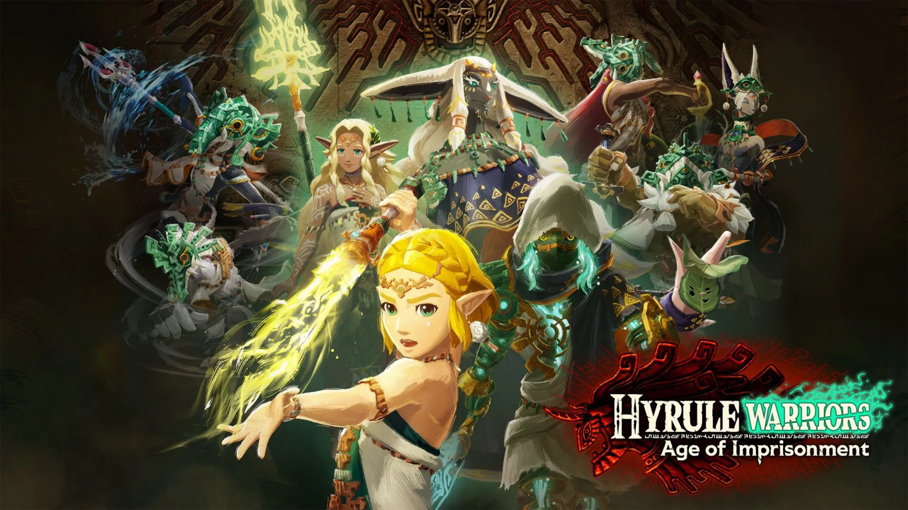

Part 5: The Present & Future of Zelda
As of writing, it's been two and a half years since the release of The Legend of Zelda: Tears of the Kingdom. The excitement and discussion that onced surrounded it has long since died out.
However, the impact left still remains, especially it's impact on the Zelda series. Here I'll be talking about what's been happening in the Zelda franchise ever since the monolithic Tears of the Kingdom.
The Legend of Zelda: Echoes of Wisdom
Cover art for The Legend of Zelda: Echoes of Wisdom
Released on the 26th of September 2024 for Nintendo Switch, The Legend of Zelda: Echoes of Wisdom is a spin-off entry in the Zelda series where you play as the titular character Zelda, as opposed to the usual main character Link. The main goal of this game, however, was to take the old 2D formula of Zelda games from the 90s and Nintendo DS Era, and combine it with the new puzzle-solving mechanics of Tears of the Kingdom. The aspect they focused on for this was the properties of the many different objects. In Echoes of Wisdom, they created the "Echoes" mechanics, allowing you to produce a replica of an object or creature you've discovered. This creates lots of puzzle opportunites, such as stacking replicas of crates to overcome obstacles or summoning slain foes to fight for you against a powerful enemy. Also introduced were some other abilities that compliment the Echoes, such as an ability oddly similar to Ultrahand that allows you to telepathically pick up and move anything you want.
While the 2D formula limited many aspects compared to Tears of the Kingdom, it still provided creative problem-solving mechanics, and due to the simplicity of its mechanics it was able to push some boundaries that not even Tears of the Kingdom couldn't, like the ability to simply pick up and move around enemies. It was a hugely enjoyable experimental spin-off, and the Zelda team likely learned lots of valuable things about the principles brought about by Tears of the Kingdom.
The Legend of Zelda: Breath of the Wild and Tears of the Kingdom: Nintendo Switch 2 Edition
Cover art for the Nintendo Switch 2 Editions of the games
On the 16th of January 2025, Nintendo revealed the successor to the Nintendo Switch, the Nintendo Switch 2 (I know, you could've never guessed by the name!), and the console later released on the 5th of June that year. Upon release it brought with it new versions of both Breath of the Wild and Tears of the Kingdom. The primary purpose of these version was simply to update the graphics and performance output for the more powerful hardware. Both games could now run at 4k60fps in TV mode, and 1080p60fps while in handheld mode. However, they did introduce a new feature in both entries called Zelda Notes, accessible through the Nintendo Switch Mobile App. This provided a variety of quality of life benefits, the most notable of which being a navigator that could keep track of your current location and display all collectibles and points of interest on the map around you, and a feature called Voice Memories, which covered the map in discoverable voice messages left by some of the in-game characters that provided many new story details and fun anecdotes.
These Nintendo Switch 2 Editions aren't the most substantial things in terms of their new content, but the most relevant thing here is that both Breath of the Wild and Tears of the Kingdom are now updated and ready to be enjoyed by newcomers for an entire console generation to come.
Hyrule Warriors: Age of Imprisonment
Cover art for Hyrule Warriors: Age of Imprisonment
Hyrule Warriors was a spinoff franchise originally created in 2014 that combined the world and characters of The Legend of Zelda with the gameplay mechanics of Koei Tecmo's Dynasty Warriors. The concept was strange, and was quite the long shot for Nintendo, who didn't believe the franchise would see any success. However, the franchise's first release sold and reviewed wildly better than expected. Eventually, Nintendo and Koei Tecmo released Hyrule Warriors: Age of Calamity on the 20th of November 2020, which acted as a sort of prequel to the story of Breath of the Wild.
What's important to note about these two games however, is that both Hyrule Warriors and Hyrule Warriors: Age of Calamity were not canonical to the mainline games. This means that their stories are set in a "what if" scenario, and never actually happened in the storyline of the main games.
This is where Hyrule Warriors: Age of Imprisonment comes in. Released on November 6th, 2025, it acts as a prequel to the story of Tears of the Kingdom similarly to Age of Calamity. However, the key difference is that the story depicted in this game is 100% canonical. The reception of this game was wildly positive among fans of Tears of the Kingdom, who delighted in experiencing an era in the ancient past of Tears of the Kingdom's story that was only barely seen prior.